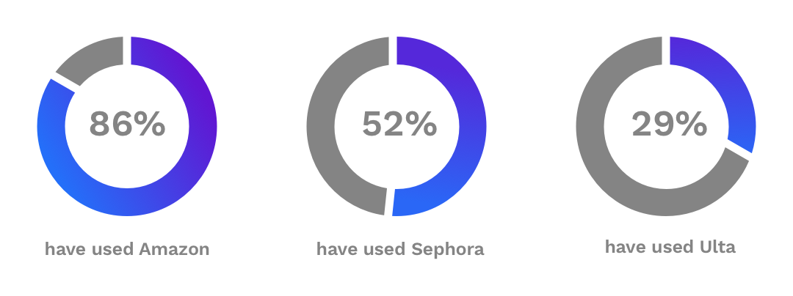

User Research Survey
To begin the project, I started with a user survey to try and determine what the main features of my app would be. My first question was simple, has the respondent purchased a beauty or skincare item online. I needed to ask this just to get a baseline of who was participating in my survey, and if they would even use the app I’m designing. I needed to ask this just to get a baseline of who was participating in my survey, and if they would even use the app I’m designing. About 81% of respondents said they had purchased online. Of those who answered yes to the first question, I wanted to see how many of them researched the products they had purchased. Somewhat unsurprisingly, 100% of respondents had looked at reviews before purchasing. I wanted to get an idea of how important reviews were to people and to see if the app I’m designing is something that people would actually find useful. Next I asked where people looked at reviews. I gave them a few options of some of the top review sites as well as an option to fill in their own.

Main user frustrations:
Not always being able to determine paid (possibly fake) reviews vs real (unpaid) reviews.
Not having enough information on the reviewer’s own characteristics (dry hair, oily skin, etc)
I find it hard to sort reviews in some of these sites. It's just a long list.
Most important features:
This results of this survey really helped me flesh out the main features I would need to include in my review application, those being: sorting by skin type, eye color, complexion, highest reviewed products, seeing which products friend’s have reviewed, and links to where you can purchase the product.
Competitive Analysis
To further research the beauty and skincare review space, I conducted a SWOT analysis of three different companies that all offer similar things: Sephora, Amazon, and a not very well known app called Beautylish. Overall, all three solutions pretty much do the same thing, just geared for a bit different of an audience. Sephora is the beauty community standard, and Amazon is the massive marketplace where people can find just about anything. Beautylish does all that the others do, just at a much smaller scale and includes editorial articles on various beauty and skincare subjects. To break into the space, I believe someone would have to find a way to perfect the review system where it’s simpler to find highly reviewed items, possibly figure out a way to deter fake or biased reviews, and potentially create a social platform aspect where people can send friends products they think they would like.
User Personas
After getting an understanding of competitors in the space, I needed to conduct a few interviews with some of the respondents from the user survey to really get an idea of who my target audience is and what they are looking for. After conducting these interviews, I came up with two user personas: The Planner and The Busy Teacher.
User Flows
After finishing my user research, it was time to begin thinking about the important features I would be applying to my app. Based on the answers I received from my survey and user interviews/personas, I knew the high priority user stories would need to be: reading and writing reviews, sort reviews based on traits, follow friends/see which products they reviewed, and view highest rated products. I was then able to produce some user flows based on these highly prioritized stories.
Branding
After figuring out the name for my app, I started on a brief style guide. I knew I wanted to incorporate a gradient at least on the landing pages to draw the users in with lively colors. I also knew I didn’t want it to come across as too “girly” right off the bat, so I decided on a bold purple to blue gradient for the landing pages. I felt this gradient didn’t come across too feminine or too masculine, just sort of right in the middle. The cosmetic and skincare industries are usually thought of as female centric industries, but men and boys are increasingly becoming more involved so I wanted to make sure my colors would appeal to both. The actual review pages of my app I wanted to keep very simple with small pops of color for certain CTA buttons or important words/phrases. I still wanted to keep a color from the gradient I used on the landing pages involved throughout the app somehow, so I decided on using one of the bold purple colors from the gradient for the side nav that slides out when the hamburger icon is selected. Again, I wanted to steer away from colors that created a feeling of it being too feminine so I decided to stick with the same neutral purple. The purple I chose for the main accent color is bold and bright, not too soft yet not too dark, a pretty neutral color. I did include a pink color as the secondary accent color because it matched the pink in the illustrations on the landing pages, although it isn’t used very often and is saved for the “read full review” or “report comment” buttons.
Hi-fi Mockups and User Testing
After branding I started on my hi-fi mockups. I found an amazing illustration library with a fully open license that allows you to pick from tons of different illustrations completely for free and without needing to include attribution. I found three that worked great as explanation images to go along with the text on my landing pages.
Designing the rest of the pages ended up only taking a few days because I had made my wireframes pretty detailed and with all of the content needed for the entire app.
For the user testing, I wanted to make sure that my design made sense for most of the high importance user stories so I had the testers go through a series of tasks which were: signing up for an account, reading and writing reviews, filtering makeup by skin type and editing your beauty traits. I conducted one test in person, one test remotely, and also created a usability test on Maze. Donna was the remote tester, and Stefan was the in person tester. Of the five maze tasks, almost every single tester had a major problem with the last task, editing personal beauty traits.
What users had to say:
I just got stuck on that last mission - was looking to find my skin/complexion traits somewhere like my profile page.
Took me a bit to find the edit button to alter skin profile and whatnot. Thinking maybe the edit button could be a little more prominent.
This was actually quite interesting to me, obviously being the designer I figured the Edit at the top of the profile would be incredibly obvious. These results got me thinking about how I could potentially improve the Profile page and make it clearer to users how to utilize the Edit Profile option. The other tests were easier for the respondents, with a slight exception for the read a review task. Similarly to Stefan and Donna’s responses, a lot of testers wanted to go straight for the Masquerade Palette that was located on the Dashboard. This was something I already knew needed to be changed, but it was good to see that others were struggling similarly to each other. The other tasks were a 100% success rate and didn’t seem to need any editing.
Conclusion
Compared to my first project at Bloc, this one came together much, much quicker and with much better results. Designing a mobile app based on a personal interest of mine was really fun, and actually liking the result at the end is a pretty great feeling. Starting this project was actually the hardest part, because I wasn’t sure if my interests and personal frustrations were shared with others. There were so many features I was interested in adding to the app, so it was difficult having to pick the most important to successfully create a MVP. Luckily it seemed others had similar feelings and frustrations about review apps, and I was able to include a lot of the features I had originally wanted to include.
I think what worked really well this time around, was that I created incredibly detailed wireframes, which was something I hadn’t been doing in previous projects. This helped immensely when it came time to actually start the hi-fi mockups because I had already done most of the work, and written all of the content that I was going to include in the final app.